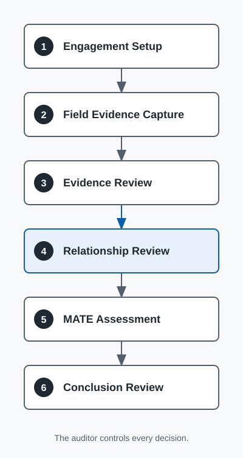
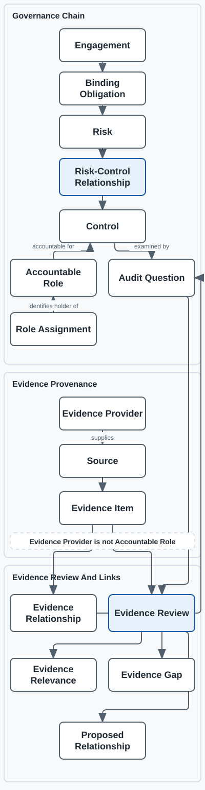
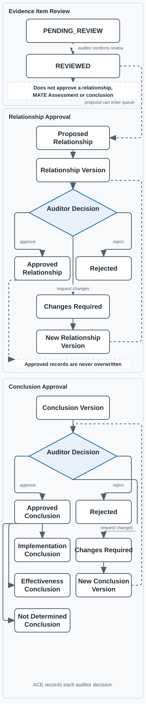

Phase 6B1 Is Complete
- Pull request 52 merged on 23 August 2026.
- The exact head was
1d832a5. - The merge commit was
1898e34. - All 31 review threads are closed.
- G0 still blocks real client information.
Private Auditor Workbench
Use this page to see what is ready, what comes next, and what must wait.
Current Position
1d832a5.1898e34.Compare the current engine, a refactor and an existing platform.
Next action: Approve one option before Phase 6B2 implementation starts.
Approved Build Goal
ACE must help the auditor capture evidence, understand relationships and reach approved, traceable conclusions.
Complete one fictional review with ten evidence items. Every conclusion must show its source, relationships and approval decisions.
Pull request 52 merged with exact head 1d832a5. The full suite passed 762 tests. API and HTML checks passed 27 tests.
The client release engine shows fixed snapshots of approved conclusions and actions. It protects published and withdrawn history.
Do not use client evidence, unprotected hosting, Production, extraction or graph tools yet.
North Star
The approval record must show who accepted each relationship and conclusion. The auditor decides.
Domain Model
The canonical terms are recorded in the ACE domain glossary.
Plain-English Tool Roles
These tools support the method. They do not replace the auditor.
Leads the local build, review and checks.
Give Codex a repeatable way to plan, build and test.
Control the assurance method and approval rules.
Makes the professional decision.
Suggests facts, source locations and possible conflicts.
Checks and displays proposed links.
Renders the controlled local diagram source as SVG files.
Creates faithful presentation copies for auditor guidance only.
Shows approved relationships as a map.
May provide a later relationship and provenance view built from approved records only.
May guide a later pause-and-resume workflow.
Challenges an important design before Codex builds it. Use only a small, sanitised pack.
Shows approved information only.
Controlled And Presentation Diagrams
Mermaid files control the diagram content. These pictures use fictional labels. ACE records remain the source of truth.




Workflow Design
Engagement Setup, Field Evidence Capture, Evidence Review, Relationship Review, MATE Assessment and Conclusion Review are approved.
The auditor starts capture. ACE does not collect evidence automatically.
Capture creates an Evidence ID and sends the item to an Evidence Inbox.
The auditor links evidence to questions and relationships during Evidence Review.
An attempt key prevents duplicate evidence when a connection fails or retries.
Automated Engineering Control
Vorflux applies Codex tokens before human bottlenecks. Humans approve architecture, risk and merge decisions.
Fix the goal, state matrix, scope, controls and test gates before work starts.
Challenge how obligations, risks, controls, accountable roles, evidence and MATE connect.
Check what LangExtract can suggest and what the auditor must decide.
Test the graph questions, node types, links and approval limits before tool selection.
Challenge hosted, offline and client-view rules before data leaves the local workbench.
Use reviews to verify requirements. Do not use review rounds to discover the basic design.
Phase 6B2 Architecture Gate
This review is a decision gate. It does not approve a rewrite or a new platform.
Keep the SQLite triggers. This has the smallest first change and the highest maintenance cost.
Move workflow rules into one ClientReleaseService. Keep essential data rules in the database.
Compare Payload, Directus and other platforms. Check audit history, release snapshots and data control.
Refactor the current engine. Use the same service for web and mobile clients.
Build Roadmap
Do not add extraction, graph or workflow complexity before the method works.
Sprint 4 uses fictional data and visible approval gates.
Automated tests passed. Protected offline drafts and full record review passed. Physical iPhone capture, preview and review are excluded from this Phase 1 completion.
Relationship Details and the Engagement Control Summary are complete. PR #39 merged with head a4fd72e and merge commit bcc5db6. The full suite passed 378 of 378 tests.
Propose one controlled, read-only review slice for recommendation precedence, conflict visibility and empty recent activity. Keep G0 and Production exclusions active.
Suggest facts and warnings through the same auditor review screen.
Compare Neo4j, Semantica or another graph using approved fictional records only.
Phase 6A and Phase 6B1 are complete. Approve the engine design before Phase 6B2 starts.
Candidate head cdc4f45 passed 65 Release tests, both Pocock reviews and Fresh Sol review. Forty-four approved runtime or controlled evidence items remain pending.
Coordinate durable work steps after the core process is stable.
Phase 7 Native iOS Development
The automated candidate is verified. Complete the approved external evidence before release.
Implement the approved Swift and SwiftUI specification. Keep changes on the approved feature branch and run focused checks.
Apply $swiftui-pro to SwiftUI work. Check APIs, data flow, navigation, accessibility and performance.
SwiftUI Pro Usage And Installation Record. Keep approved platform versions and existing review checks.
Use Xcode 26 to compile the private source, run automated tests and produce the iOS Simulator .app bundle.
Receive the compiled simulator bundle only. Run the approved cloud-simulator flows and retain logs, screenshots and video evidence.
Use the approved Mac and an iPhone 15 Pro or later model for final Keychain, application-switcher and device-behaviour evidence.
cdc4f458bfd3ede385844b31eed117d3c06e854d. Codemagic passed 65 of 65 Release tests. Both Pocock reviews approved the head. Fresh Sol returned ship with no findings.
Parallel Fictional-Data Pilots
These are separate investigation tracks. Neither pilot has implementation approval.
Test source-linked proposals and a disposable exploratory graph. Keep every output unapproved.
Test source-linked context search only. Keep session memory disabled for the complete pilot.
Complete legal, privacy, architecture, dependency and session-memory checks before installation.
ACE keeps the audit record and approval gates. A mobile app calls the ACE API only.
Decision Gates
| Gate | Question | Current State |
|---|---|---|
| G0 Client And Data | Has the client accepted the review and are the data rules approved? | Held |
| G1 Method | Does the build follow the EOI, MATE and CONTRA method? | Current Check |
| G2 Evidence | Can each item keep its source, version and status? | Automated Pilot Passed |
| G3 Relationships | Can the auditor approve or reject each proposed link? | Controlled Baseline And Pilot Verified |
| G4 Graph | Can the graph rebuild from approved records only? | Not Started |
| G5 Client View | Can the client see approved information only? | Phase 6B1 Verified; Architecture Review Next |
| G6 Native App | Does the app use ACE records and gates without a second source of truth? | Candidate Verified; 44 Evidence Items Pending |
Workspace Map
src, tests, apps/relationship-review-pilot, current method documents, the roadmap and this guide.sqe-quarantine-2026-08-12. Nothing was deleted.Working Checklist
The checklist saves its state in this browser only.
{kind=link}
{kind=link}
{kind=link}
{kind=link}